早上八時從我們下榻的沙上區路易斯酒店出發, 穿過釜山沙上客運站, 循廣場路走, 在沙上地鐵站上的路口轉右沿歷史路 (사상로)走了一會, 來到一個三叉路口, 在這裡轉左沿十點方向的小路走, 這小路是歷史路146段街。看見前面兩個老人家的行裝好像是晨運的, 靈機一動, 老人家的晨運一般都是去公園的。莫非他們現在就是去沙上近鄰公園? 如果是, 那就 Wonderful! 快些跟著他們走。

穿過歷史路146段街, 不時回頭望望, 那麼回程時就不會走錯路。
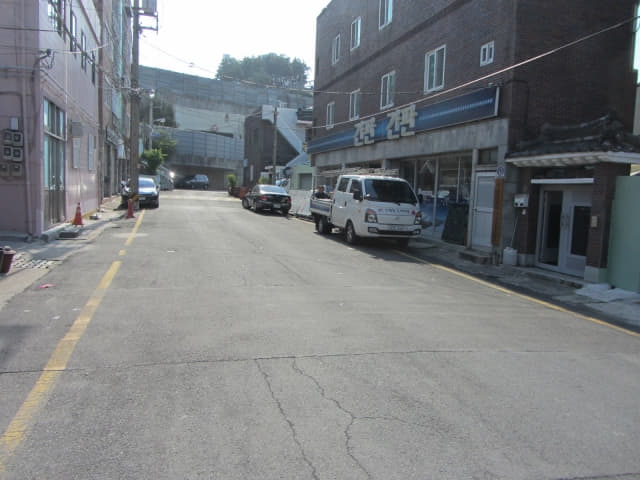
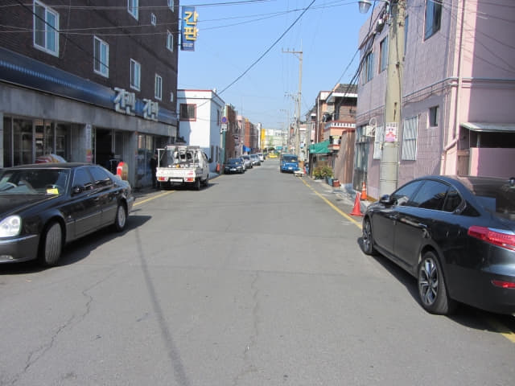
來到歷史路146段街的盡頭, 看見那兩位老人家走上石級, 便繼續跟著走。
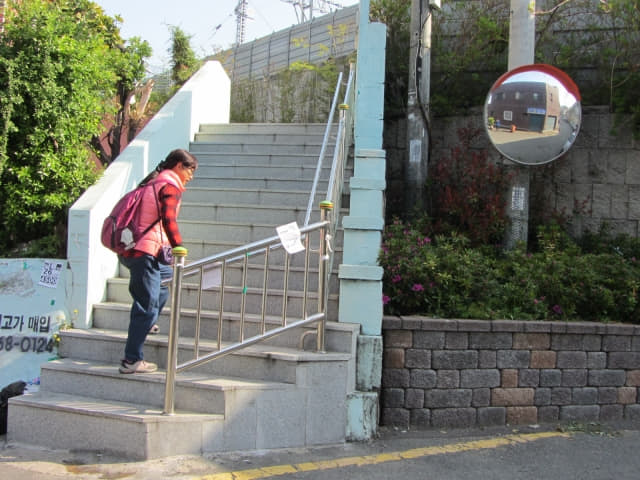
接著沿馬路往上走。嘩! 那兩位老人家不見了, 走得可真快呢!
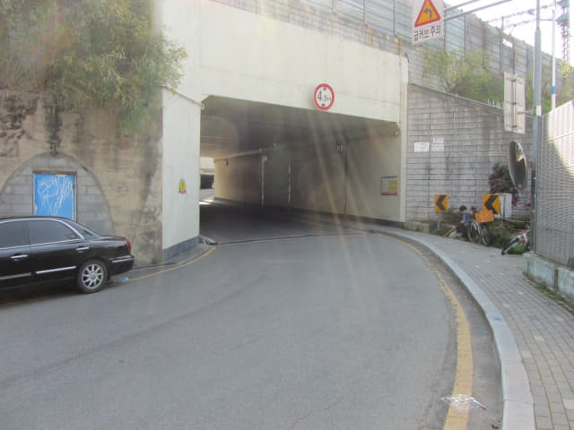
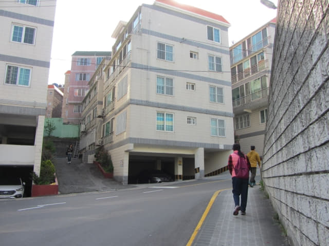
拐個彎, 望望前面。哦! Where are the 兩位老人家?
老人家怎麼不見了?
老人家怎麼不見了?
他那麼老 讓他怎麼跑?
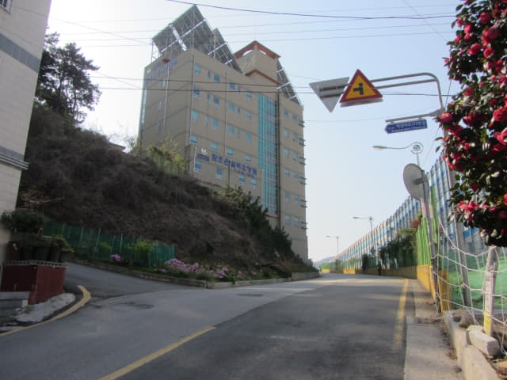
哈哈哈~~~~ 原來他們在前面的路口轉左。一於 show hand 跟啦! 看來我們沒有估錯, 他們都是往沙上近鄰公園的。
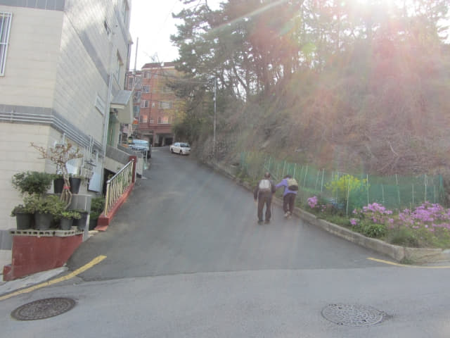
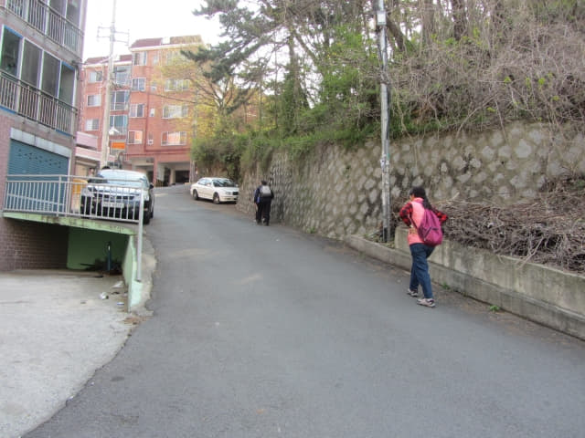
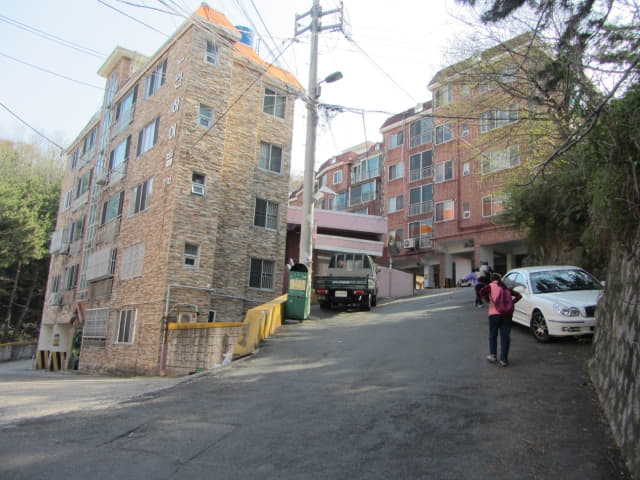
那兩位老人家好像已經發現我們「搵他做針」, 又可能懷疑我們有什麼企圖, 坐下來不走, 實行按兵不動。
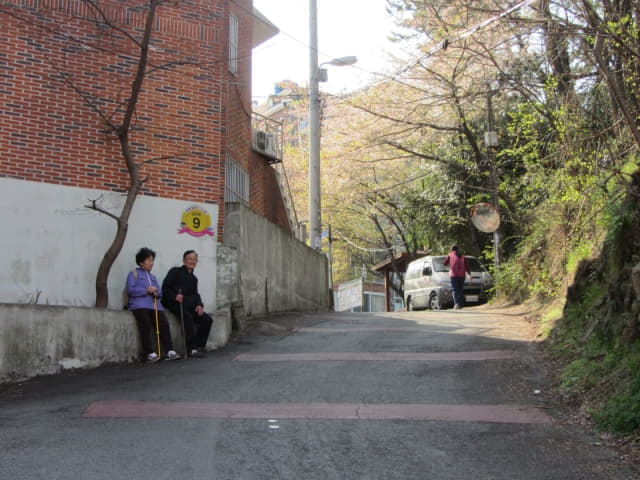
唯有慢慢走過他們。
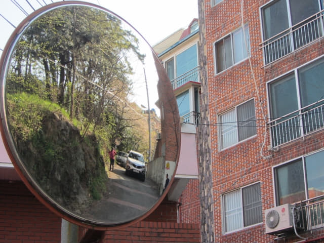
接著在前面「炸炸帝」拍照, 看他們可以等得幾耐? 一於鬥耐性。
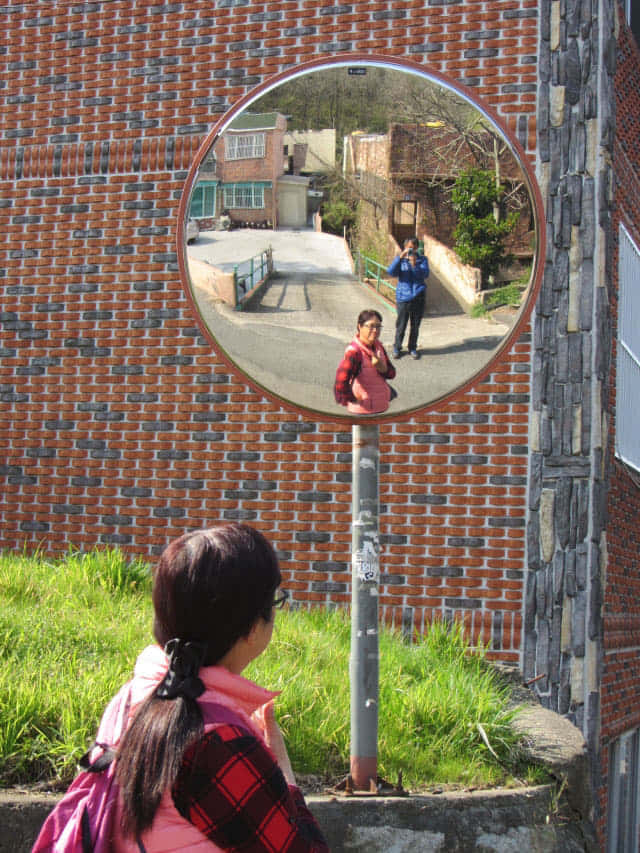
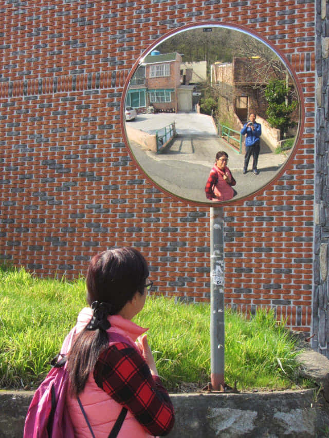
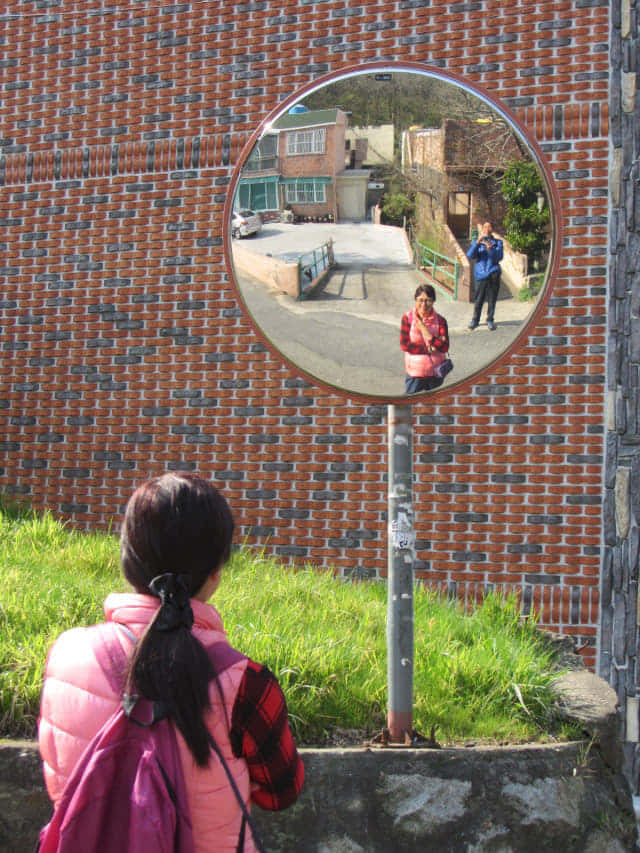
等了差不多十分鐘, 他們終於忍不住, 又可能看見有另一位途人經過, 立即出發。
我們當然繼續…….跟! 原來公園是在山上的!
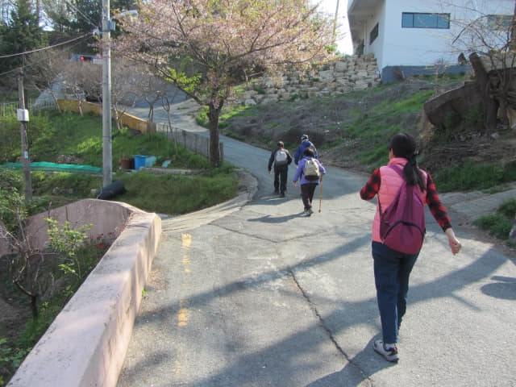
穿過一條人行隧道。
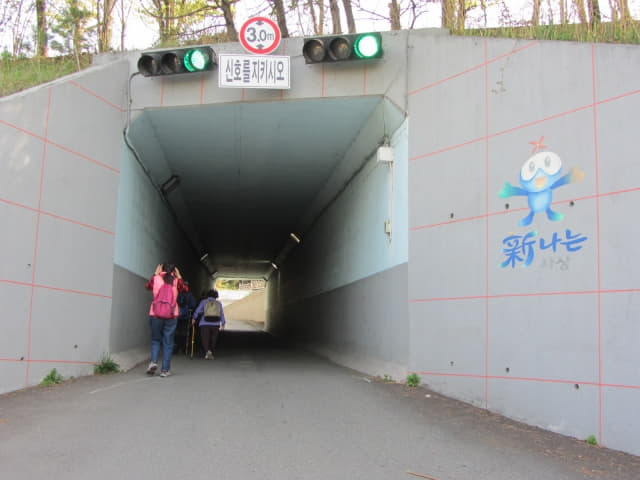
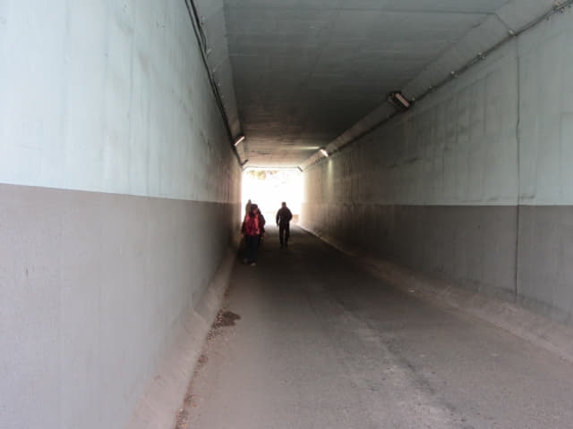
沙上近鄰公園 (사상근린공원)
穿過人行隧道, 迎面是一個公園, 這裡便是沙上近鄰公園。哈哈~~~ 那兩位老人家果然是來沙上近鄰公園晨運的! 竟然有專人從山下的街道帶領我們來到公園入口。Wonderful 啦!
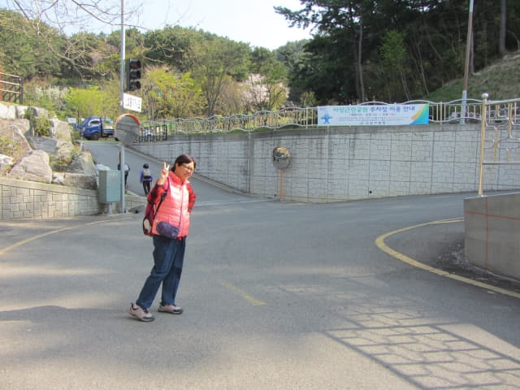